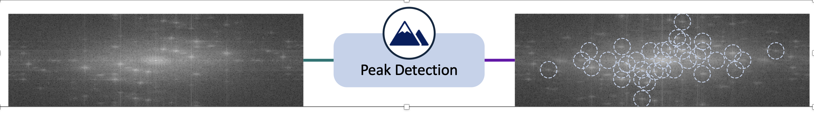

Fourier Image Similarity: From Paper to Open-Source Package

Why Frequency Domain for Image Comparison?
Most image similarity approaches operate in pixel space: comparing histograms, SSIM, feature embeddings, or learned descriptors. These work well when images share spatial structure at similar scales and positions. But some classes of images are better understood by their periodic structure — the repeating patterns that are invisible in individual pixel values but immediately apparent as sharp peaks in the Fourier magnitude spectrum.
The specific context in my paper was anti-copy patterns: fine security prints designed with deliberate repeating microstructure that degrades under reprography. Two images that look visually similar in pixel space may have very different Fourier peak arrangements depending on whether that microstructure survived capture — and those differences are diagnostically important.
Once I had the Fourier comparison pipeline working for that task, it was clearly reusable beyond it. The fourier-image-similarity package extracts exactly that pipeline — no domain-specific logic, no segmentation or downstream classifier — just the frequency-domain feature extraction and scoring that any project can drop in.
How the Pipeline Works
The package is structured as six composable stages. Understanding what each stage does makes it easier to tune for a new domain.
1. Loading and Preprocessing
Images are loaded as grayscale float arrays and optionally resized to a fixed resolution. Working in grayscale is deliberate: the Fourier magnitude of a colour image mixes luminance and chrominance in ways that complicate peak interpretation. Resizing to a common resolution before transforming keeps peak coordinates comparable across images.
2. FFT Magnitude and Phase
The centered 2D FFT is computed for each image, producing two outputs:
- Magnitude — log-scaled and min-max normalised. Reveals how much energy sits at each spatial frequency. Periodic patterns produce sharp bright peaks away from the DC centre.
- Phase — the argument of the complex transform, normalised to
[0, 1]. Less commonly used but locally informative around peaks: phase entropy captures how ordered or chaotic the phase structure is in a neighbourhood.
3. Peak Detection
Local maxima are extracted from the magnitude image using a maximum filter. The DC region at the spectrum centre is masked out first — it is almost always dominant and uninformative for pattern comparison. The top N peaks by strength are retained (default 35), with a minimum spacing constraint to prevent tightly clustered detections counting as multiple peaks.
4. Local Peak Features
For each detected peak, two statistics are computed over a disk-shaped neighbourhood in the magnitude and phase images:
- Peak prominence — the peak-to-trough range within the local window, measuring how sharply the peak stands out from its surroundings.
- Peak entropy and phase entropy — histogram-based Shannon entropy of the neighbourhood. Low entropy means a clean, well-defined feature; high entropy indicates a diffuse, noisy region.
5. Reference Selection
When comparing a query set against a large pool of candidate reference images, you usually want a representative subset rather than all of them. The selection heuristic computes pairwise nearest-peak distances between all candidates and scores each candidate by how close its peak pattern is to the rest of the pool. Images with the lowest mean nearest-peak distance to others are the most central and are selected as references.
This is useful in practice because collecting a "perfect" clean reference set is rarely possible — you often have a noisy pool and need to filter it programmatically.
6. Similarity Scoring
Each query image is compared against each reference image using six component metrics, then aggregated into a single score in [0, 1]:
- Peak match ratio (35%) — fraction of peaks in each image that have a close counterpart in the other, within a spatial radius threshold. The dominant term because peak layout is the most discriminating frequency signature.
- Peak mismatch ratio (20%) — fraction of peaks that have no match. Complementary to match ratio but penalises spurious detections in one image.
- Average closest-peak distance (20%) — mean nearest-neighbour distance between the two peak sets. Captures spatial offset even when peaks broadly align.
- Prominence difference (10%) — difference in mean local prominence. Flags when one image has sharper, more isolated peaks than the other.
- Peak entropy difference (7.5%) and phase entropy difference (7.5%) — differences in neighbourhood chaos around peaks in magnitude and phase respectively.
Using the Package
Installation is straightforward — the only dependencies are NumPy, SciPy, and Pillow:
pip install fourier-image-similarityThe CLI covers the most common workflow:
fourier-image-similarity \
--query-dir /path/to/query_images \
--reference-dir /path/to/reference_images \
--num-references 10If you have a larger pool and want automatic reference selection, swap --reference-dir for --reference-candidate-dir. The tool will select the most representative subset and report which images were chosen.
For use inside a pipeline, the Python API keeps things simple:
from fourier_image_similarity.pipeline import run_similarity_analysis
rows, references = run_similarity_analysis(
query_dir="/path/to/query_images",
reference_dir="/path/to/reference_images",
num_references=10,
)
for row in rows[:5]:
print(row["file"], row["similarity_score"])Each row in the output contains the full breakdown: similarity score, peak match and mismatch ratios, average closest-peak distance, and the three difference metrics. This makes it easy to diagnose why a particular image scored high or low rather than just accepting the aggregate number.
Tuning for a New Domain
The defaults were calibrated for the anti-copy pattern use case (tall, narrow crops at 216×685 pixels with up to 35 peaks). If you are applying this to a different image type, these parameters are worth reviewing:
image_size— set this to a consistent resolution that preserves the spatial frequency you care about. Very large images slow the FFT; very small images lose fine frequency detail.num_peaks— increase for images with rich periodic structure; decrease for images with a small number of dominant frequency components.match_radius— the pixel radius within which two peaks are considered matched. If your images have significant geometric distortion between query and reference, increase this.dc_exclusion_radius— the masked region around the DC centre. Increase if low-frequency background variation is dominating your detections.
Relation to the Paper
The package implements the Fourier-domain comparison sub-pipeline from our anti-copy pattern detection framework. The full paper additionally covers mobile phone image acquisition, a segmentation stage to isolate the pattern region, and a downstream classifier — none of which are included here. The package is intentionally narrow: it provides only the frequency comparison logic that generalises beyond that specific application.
The paper and package can be cited independently. If you use the package in research, the README includes a BibTeX entry pointing to the Array 2026 paper.
Related Papers and Source
- Smith, J., Zuo, Z., Stonehouse, J., Obara, B. (2026). Mobile phone image-based framework for anti-copy pattern detection and classification. Array, 29, 100643. DOI: 10.1016/j.array.2025.100643.
- Source code: github.com/Smithy305/fourier-image-similarity
Related Posts

Image Quality Filtering for Fine-Grained Classification
The frequency comparison pipeline assumes images are clean enough for peaks to be detectable. This post covers how to gate on image quality before feeding images into any comparison step.